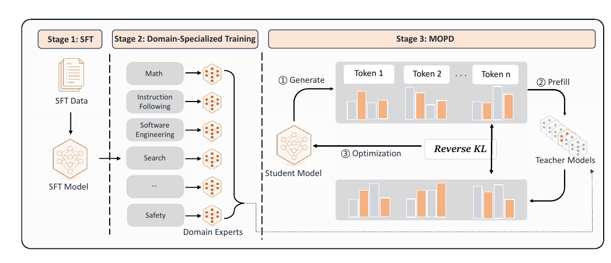
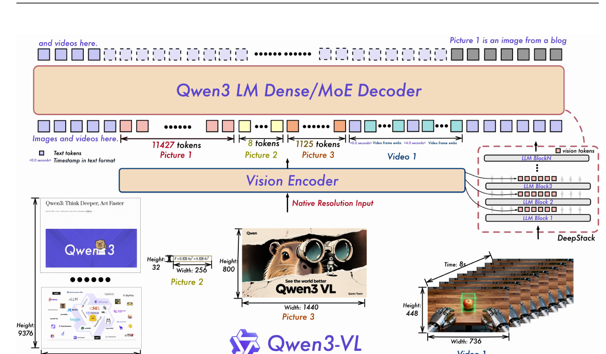
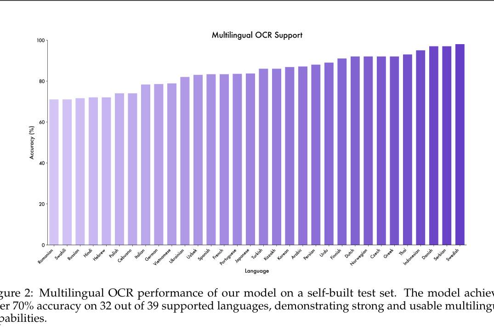

对抗 OCR
处理旋转、扭曲、遮挡、谐形与图文组合攻击，不只识别干净印刷文字。
我参与 V3 版统一合训，重点把对抗 OCR、细粒度感知与富文本理解等前沿探索能力，通过批量数据构造和 MOPD 蒸馏迁移到基础模型。
高级模型适合探索能力上限，但大规模内容安全需要统一模型承担稳定吞吐。真正的问题是：如何保留专家能力，同时避免多域混训造成能力互相稀释、训练不稳定和迭代耦合。
处理旋转、扭曲、遮挡、谐形与图文组合攻击，不只识别干净印刷文字。
关注局部区域、微小目标、属性与空间关系，降低“看见大概但答错细节”。
保留表格、列表、公式、版式与跨区域对应关系，让识别结果可继续推理和审核。
把“高级模型更强”拆成可测的能力维度、失败模式和目标输出格式。
围绕攻击变体、局部细节和复杂版式批量生成样本，再经教师与规则过滤。
学生在自己的 rollout 上生成，路由到对应专家获得逐 token 稠密监督。
同时检查专项能力、通用能力和安全边界，避免“一个能力涨、其他能力掉”。
以下截图来自公开技术报告，用于解释通用机制，不代表蚂蚁内部模型结构、数据规模或训练配置。

静态教师答案与学生推理时分布不一致；on-policy 让训练直接覆盖学生会走到的状态。
不同专家可以并行开发，再按任务路由整合，减少多域直接混训的相互干扰。
教师在每个 token 上提供分布信息，比只有最终成败的序列级奖励更细。

视觉 token 的分辨率、层级特征注入和跨模态对齐，会共同决定 OCR 与细粒度感知上限。
大量合成与筛选数据、强到弱蒸馏、专项能力训练，再回到统一模型评测。
不是复述架构，而是把高级能力转成可规模化的数据与训练信号。

下面是用于说明能力链路的公开展示型合成案例，不含任何内部数据。
| Merchant | Northwind Lab |
| Serial No. | A8-5Z7-0I |
| Item | Vision Sensor × 2 |
| Subtotal | ¥ 3,980.00 |
| Tax | ¥ 238.80 |
| Total | ¥ 4,218.80 |
任务：读取倾斜序列号，区分 Z/2、I/1，并保留表格与金额层级。
Serial: A8-527-01
Total: ¥3,980.00
（混淆字符，并把小计当成总额）OCR teacher → A8-5Z7-0I
Fine-grained teacher → 定位 Serial 行与 PAID 印章
Rich-text teacher → 恢复 Subtotal / Tax / Total 层级{
"serial": "A8-5Z7-0I",
"subtotal": 3980.00,
"tax": 238.80,
"total": 4218.80,
"status": "PAID"
}Case 为网页合成示例，展示能力拆解和训练目标，不对应内部样本或实际模型输出。
规则增删改写与 Teacher-Verifier 闭环，解决“策略变化后标签也要变化”。
进一步解决“前沿专项能力怎样进入主模型并保持通用能力”。
我对安全大模型的理解从数据规则层，延伸到模型能力整合与持续迭代层。